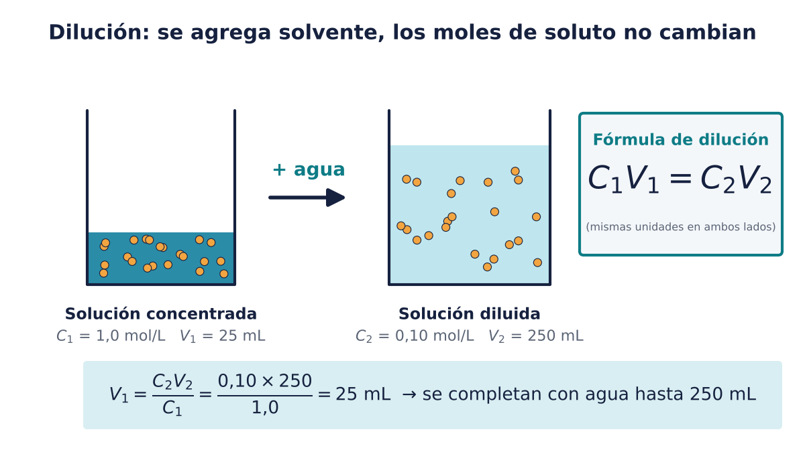

Objetivo y competencias
Objetivo: calcular y preparar una solución a partir de un sólido y otra por dilución de una solución patrón, y comprobar la concentración, usando el Laboratorio Virtual de ChemCollective.
Tiempo: 1 hora 30 minutos. Trabajo: en parejas.
Materiales: computador con internet, cuaderno de laboratorio y calculadora. Antes de empezar lee la página Guía rápida de ChemCollective.
| Saber | Hacer | Ser |
|---|---|---|
| Explica qué es una solución patrón y deduce C1V1 = C2V2. | Calcula y prepara soluciones por masa y por dilución, y verifica su molaridad en el laboratorio virtual. | Es riguroso con las unidades y reconoce y corrige sus errores de procedimiento. |
Para entender: preparar y diluir
En un laboratorio real casi nunca se compran las soluciones con la concentración que se necesita. Se compra el reactivo concentrado (una solución patrón o «stock») o el sólido puro, y se prepara la solución de trabajo. Hay dos caminos:
| Camino | Cuándo se usa | Cálculo | Procedimiento |
|---|---|---|---|
| Por masa (a partir de un sólido) | Sales y bases sólidas como NaCl o NaOH | m = M × V × Mr | Pesar el sólido en una balanza, pasarlo a un matraz aforado, disolver con algo de agua y completar hasta la marca de aforo. |
| Por dilución (a partir de una solución patrón) | Ácidos y soluciones ya preparadas | C1·V1 = C2·V2 | Medir V1 de la solución patrón, pasarlo a un matraz aforado y completar con agua hasta la marca. |

Diluir es agregar solvente. El volumen aumenta, pero la cantidad de soluto (los moles) se mantiene. Como n = C·V, antes y después de diluir se cumple n1 = n2, es decir:
C1 · V1 = C2 · V2
donde C1 y V1 son la concentración y el volumen que tomas de la solución patrón, y C2 y V2 son los de la solución diluida. El factor de dilución es F = C1/C2 = V2/V1.
Ejemplos resueltos
Ejemplo 1 (dilución). Quieres 250 mL de HCl 0,10 M a partir de HCl 1,0 M. V1 = (0,10 × 250) / 1,0 = 25 mL. Tomas 25 mL de la patrón y completas con agua hasta 250 mL (F = 10).
Ejemplo 2 (por masa). Quieres 250 mL de NaCl 0,10 M. n = 0,10 × 0,250 = 0,025 mol; m = 0,025 × 58,44 = 1,461 g. Pesas 1,461 g, los disuelves y completas hasta 250 mL.
Ejemplo 3 (dilución en serie). De una solución 0,10 M tomas 10 mL y completas hasta 100 mL: C = 0,10 × 10 / 100 = 0,010 M. Si repites desde esa, obtienes 0,0010 M. Cada paso divide por 10.
Errores frecuentes: (1) completar con 100 mL de agua en lugar de «hasta» 100 mL (el aforo es el volumen final); (2) mezclar unidades (mL con L); (3) en el laboratorio real, echar agua sobre un ácido concentrado en lugar de agregar el ácido sobre el agua.
Conoce la herramienta: ChemCollective
Abrir en una pestaña nueva: Laboratorio Virtual de ChemCollective (úsalo si el simulador incrustado no carga o si trabajas desde el celular). Cuando cargue, haz clic en el icono del mundo si quieres cambiar el idioma a Español.
Antes de empezar, repasa la página Guía rápida de ChemCollective. Este es el mapa de lo que vas a usar:
| N.º | Elemento | Para qué sirve |
|---|---|---|
| 1 | Almacén → Soluciones | Categorías Strong Acids (1 M HCl, 0,1 M HCl…), Strong Bases (1 M NaOH…), Solids (NaCl) y el agua destilada de 3 L. |
| 2 | Almacén → Cristalería | Volumetric Flasks de 100, 250, 500 y 1000 mL; Pipettes de 5, 10 y 25 mL y la pipeta desechable; Erlenmeyers, vasos y probetas. |
| 3 | Almacén → Herramientas | Balanza (Scale) y mechero Bunsen. |
| 4 | Signo + | Saca el objeto del almacén y lo pone en el banco de trabajo. |
| 5 | Banco de trabajo | Zona central. Arrastra un recipiente sobre otro para transferir. |
| 6 | Cuadro de transferencia | Pestañas Preciso, Figura de significancia y Realista. En Preciso escribe el volumen (mL) o la masa (g) y pulsa Derramar. |
| 7 | Información | Muestra volumen, molaridad de cada especie (H+, OH−, Na+, Cl−…), temperatura y pH. |
| 8 | Menú ≡ del recipiente | Eliminar sólidos, eliminar líquido, duplicado, propiedades térmicas, rebautizar y eliminar. |
No se reproducen capturas del laboratorio porque su licencia (CC BY-NC-ND 3.0) no lo permite. Mira el ejemplo paso a paso oficial: Step-by-Step Demonstration (titulación).
Predice: haz tus cálculos antes de entrar
Resuelve en el cuaderno antes de abrir el laboratorio. Estos cálculos son tu «plan de trabajo».
Cálculo previo
- ¿Qué volumen de HCl 1,0 M debes tomar para preparar 100 mL de HCl 0,10 M? ¿Cuánta agua debes agregar?
- ¿Cuántos gramos de NaCl necesitas para preparar 250 mL de solución 0,10 M? (Mr = 58,44 g/mol)
- Si de la solución de HCl 0,10 M tomas 10 mL y completas hasta 100 mL, ¿cuál será la concentración y cuál el factor de dilución?
- ¿Qué pH esperas para HCl 0,10 M y para HCl 0,010 M? (Recuerda pH = −log[H3O+] y que el HCl es un ácido fuerte).
- ¿Qué material de vidrio elegirías para completar el volumen con exactitud? ¿Por qué no un vaso de precipitados?
- V1 = 0,10 × 100 / 1,0 = 10 mL; agua: se completa «hasta» 100 mL, es decir, unos 90 mL.
- n = 0,10 × 0,250 = 0,025 mol; m = 0,025 × 58,44 = 1,461 g.
- C = 0,10 × 10 / 100 = 0,010 M; F = 10.
- HCl 0,10 M → pH = 1; HCl 0,010 M → pH = 2 (cada dilución 1:10 sube el pH una unidad).
- Un matraz aforado, porque tiene una marca de aforo precisa. El vaso de precipitados solo da volúmenes aproximados.
Actividad 1: diluyo un ácido patrón
Abrir en una pestaña nueva: Laboratorio Virtual de ChemCollective (úsalo si el simulador incrustado no carga o si trabajas desde el celular).
Meta: preparar 100 mL de HCl 0,10 M a partir de HCl 1 M.
- En Almacén → Soluciones abre Strong Acids y pulsa + en 1M HCl. Haz clic en el recipiente y mira el panel Información: anota el volumen (100 mL) y el pH.
- En Cristalería → Volumetric Flasks pulsa + en 100 mL Volumetric Flask.
- En Soluciones pulsa + en Distilled H2O (la garrafa de 3 L). Si los objetos se superponen, arrástralos para separarlos.
- Arrastra el recipiente de 1M HCl sobre el matraz aforado. En el cuadro elige Preciso, escribe 10 (mL) y pulsa Derramar.
- Arrastra la garrafa de agua destilada sobre el matraz. En modo Preciso escribe 90 mL y pulsa Derramar. Verifica en Información que el volumen sea 100,0 mL.
- Haz clic en el matraz y lee en Información la molaridad de H+ (o H3O+), la de Cl− y el pH. Anótalos.
- Prueba el error: repite pasando el agua primero a un Erlenmeyer de 250 mL con 100 mL de 1 M NaOH hasta que el laboratorio avise que se desborda. Anota lo que dice el aviso y cuánto se transfirió.
Responde mientras trabajas
- ¿Qué concentración y qué pH leíste en el matraz? ¿Coinciden con tu cálculo previo?
- ¿Qué pasaría con la concentración si hubieras agregado 100 mL de agua en lugar de completar hasta la marca de 100 mL?
- ¿Qué mensaje mostró el laboratorio al desbordarse el Erlenmeyer y qué enseñanza deja sobre la elección del material?
Tabla de registro
| Solución | C₁ (mol/L) | V₁ tomado (mL) | Agua agregada (mL) | V₂ final (mL) | C₂ leída (mol/L) | pH leído |
|---|---|---|---|---|---|---|
Actividad 2: preparo una solución por masa
Meta: preparar 250 mL de NaCl 0,10 M a partir de NaCl sólido.

- En Soluciones → Solids pulsa + en NaCl. Aparece un frasco de sal sobre el banco.
- En Cristalería → Volumetric Flasks pulsa + en 250 mL Volumetric Flask y sepáralo del resto de objetos.
- Arrastra el frasco de NaCl sobre el matraz aforado. Se abre un cuadro con el campo Masa (g) y el botón Derramar. Escribe la masa que calculaste (1,461 g) y pulsa Derramar.
- Saca la garrafa de agua destilada y arrástrala sobre el matraz. En modo Preciso pasa agua hasta que el volumen total sea 250 mL.
- Haz clic en el matraz y lee en Información la molaridad de Na+ y de Cl−. Anótalas.
- Opcional: en Herramientas saca la Scale (balanza) y observa cómo se usa para medir la masa de un recipiente.
Responde mientras trabajas
- ¿Qué concentración de Na+ y de Cl− leíste? ¿Por qué son iguales?
- ¿Cuál es tu error porcentual? E% = |valor leído − valor deseado| / valor deseado × 100.
- ¿Por qué se completa el volumen con agua después de disolver el sólido, y no se agregan de entrada 250 mL de agua?
Tabla de registro
| Solución | Masa calculada (g) | Masa agregada (g) | V final (mL) | M deseada (mol/L) | M leída (mol/L) | E % |
|---|---|---|---|---|---|---|
Actividad 3: dilución en serie
Meta: obtener soluciones cada vez más diluidas y comprobar cómo cambia el pH.
- Parte de tu HCl 0,10 M de la Actividad 1 (100 mL). Saca otro matraz aforado de 100 mL y agua destilada.
- Pasa 10 mL de tu HCl 0,10 M al nuevo matraz (modo Preciso, Derramar) y completa con agua hasta 100 mL.
- Lee la molaridad y el pH. Debes obtener una solución 0,010 M. Rebautiza el matraz (menú ≡ → Rebautizar) como «HCl 0,010 M».
- Repite una vez más, desde la solución 0,010 M, para llegar a 0,0010 M.
- Reto opcional (modo Realista): usa una pipeta de 10 mL. Arrástrala sobre el recipiente que da y pulsa Withdraw (aspirar), luego sobre el matraz receptor y pulsa Pour (verter). Compara la exactitud con la del modo Preciso.
Responde mientras trabajas
- ¿Qué pH leíste en cada solución (0,10 M; 0,010 M; 0,0010 M)? ¿Qué patrón observas?
- ¿Cuál es el factor de dilución total desde la solución 1 M hasta la 0,0010 M?
- ¿Por qué el pH cambia una unidad cada vez que diluyes diez veces un ácido fuerte?
Tabla de registro
| Solución | Volumen tomado (mL) | Volumen final (mL) | Concentración leída (mol/L) | pH leído |
|---|---|---|---|---|
Resuelve y comprueba
Ordena los pasos para preparar una solución diluida a partir de una solución patrón.
- Calcular el volumen de solución patrón que se necesita (V1)
- Medir ese volumen con una pipeta o con el cuadro de transferencia precisa
- Pasarlo a un matraz aforado
- Agregar agua hasta cerca de la marca de aforo
- Completar con agua hasta la marca y mezclar bien
Problemas de dilución
Resuelve primero en tu cuaderno y luego marca tu respuesta.
Cierra y reflexiona
Responde en tu cuaderno:
- ¿Qué ventaja tiene practicar una dilución en un laboratorio virtual antes de hacerla en uno real?
- ¿Qué error cometerías con más facilidad al preparar una dilución real? ¿Cómo lo evitarías?
- ¿Qué otra solución de tu vida diaria necesita ser diluida antes de usarla?
Respuestas orientadoras: 1) puedes equivocarte, repetir y entender el proceso sin gastar reactivos ni correr riesgos; 2) medir mal el volumen o pasarte de la marca de aforo; verificar la marca a la altura de los ojos y completar gota a gota; 3) por ejemplo, el cloro de uso doméstico, un jugo concentrado o un fertilizante líquido.